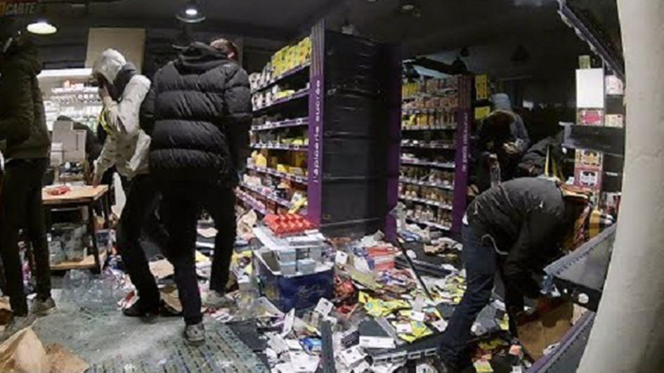
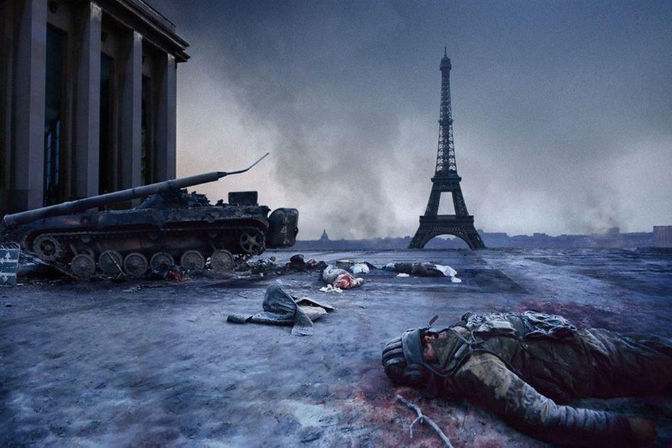

Le tome II de Guérilla de Laurent Obertone, porte en sous titre « Le temps des barbares » il a paru en septembre 2019 aux éditions Ring. Il est une suite du premier opus, paru en 2016 intitulé en sous titre « Le jour où tout s’embrasa ».
Le nombre de pages est à peu près équivalent pour les deux tomes (environ 400) et la couverture est quasiment la même : la Tour Eiffel. Le monument est vu de terre sur le premier ouvrage et vu du ciel, à bord d’un hélico, pour le second.
On retrouve dans l’aventure apocalyptique du tome II quasiment les mêmes personnages emportés par le chaos réaliste qui suit le déclin de la France.
Un vieil homme accompagnant une petite fille dans Paris, un jeune couple dans la Somme qui veut survivre. Un homosexuel, plutôt pleutre qui va s’aguerrir au fil des pages. Des militaires en rupture, qui livrent dans la proche banlieue un dernier baroud d’honneur et auxquels des civils droitdelhomistes, veules et lâches, mettent des bâtons dans les roues, tout en se réfugiant derrière eux.
Des bobos qui, envers et contre toute logique et contre toute évidence refusent de croire ce qu’ils voient. Enfin, pour compléter cette disparité de personnages, on suivra tout au long de l’aventure un couple hétérogène formé par un médecin gravement blessé et invalidé par des tirs de terroristes lors de l’attaque de son hôpital. Une psychologue, du même hôpital un peu délurée et très naïve qui pilotera un hélicoptère sous les directives du toubib.
On était plutôt habitués de la part d’Obertone à des essais de sociologie ou à des écrits sous forme de reportages journalistiques. Ses tentatives d’écritures « romancées » concernent d’ordinaire des sujets d’actualité, issus de faits divers dramatiques. Ces romans sont très documentés et racontés avec brio tel Utoya.
Guérilla est son véritable premier roman de fiction, ce qui ne veut pas dire qu’il n’y a pas eu, pour ces ouvrages, de documentation finement et patiemment rassemblée, même si parfois l’action entreprise paraît peu probable. Ce qu’il faut surtout retenir du deuxième opus est l’évolution de la langue, de l’écriture d’Obertone. Froide et mécanique comme le chien d’un révolver qu’on relève dans le premier volume, l’écriture atteint un style que l’on n’attendait pas et qui surprend agréablement :
« Et sur son corps s’était remise à tomber la neige, cette ode éphémère au silence éternel. » p.243
Ou bien encore :
« Le soleil rouge sombrait à la lumière du monde, et l’horizon buvait tranquillement la coupe de son sang. Comme si le ciel célébrait pour lui une dernière eucharistie. » p.249
Cette écriture a une puissance poétique dans la description des sentiments les moins nobles de l’humanité : la vilenie, la lâcheté. Les sentiments plus naturels afférents à l’homme, tels que la peur, sont décrits et résumés en des phrases aussi riches que brèves :
« La saveur métallique de la peur sur la langue. » p.46
Pour le plus grand plaisir du lecteur, cette dimension nouvelle et poétique de l’écriture d’Obertone ne tourne pas le dos à l’écriture naturelle et parfois un peu sèche à laquelle l’auteur nous avait habitués :
« Vraiment, Twaalf, je vous le dis : Ce pays est tout suppurant de merde. On peut vivre ensemble, mais pas avec n’importe qui. » p.76
Comme pour le premier volume, on peut parfois se demander si Obertone n’en fait pas un peu trop dans le descriptif de l’absurdité de notre société et de nos concitoyens. On avait rencontré dans le premier tome, la Cité Taubira, d’où tout s’était enflammé, on découvrira dans le deuxième opus une esplanade Greta Thunberg ! Comme quoi, un manuscrit peut toujours se retoucher à la dernière minute, histoire d’apporter une touche d’actualité à l’écrit.
Dans « Le temps des barbares » nous avions rencontré le Ministère du Très bien Vivre Ensemble, nous rencontrons à présent le Ministère des Luttes interphobes :
« Cette campagne était soutenue par le ministère des Luttes interphobes. » p.96
Exagérations extravagantes avais-je pensé, à l’époque, au sujet du Ministère du Très bien vivre ensemble ; je ne suis plus sûr d’avoir raison. Notre société évolue très vite vers une absurdité et un non sens inimaginables il y a seulement quelques années. Obertone a simplement une intuition plus aiguisée, plus fine qu’il projette sur le futur proche avec un vocabulaire qui paraît caricatural aujourd’hui et qui sera dans la bienséance et le langage ordinaire de demain. Dans une société où, tous repères logiques et tout bon sens, ainsi que toutes normes auront disparu.
On est bien obligé d’adhérer à la pensée d’Obertone, quand dans notre réel quotidien, l’absurde, ne manque pas : à l’heure où les « laïcards » de gauche défilent dans les rues avec les islamistes au nom de la laïcité - chose proprement impensable il y a quelques mois - quoi de moins surprenant que de lire ce qui suit :
« Les six autres s’engouffrèrent dans la boutique. Ils y trouvèrent de la nourriture et des boissons, en quantité, friandises bariolées comprises, et le coin hallal conformément à la nouvelle loi sur la laïcité. » p.106
L’humour, parfois sous forme de clins d’œil, ne manque pas et le calife du Grand Paris pourra bientôt se distraire à loisir :
« Il pourrait continuer à superviser les opérations de conquête du Grand Paris, et se divertir de bon cœur avec ce chroniqueur juif, vaguement connu dans l’ancien monde, que lui avait procuré son second. »p.128
L’écriture, plaisante et puissante ne cesse de surprendre par la poésie insérée dans cette histoire tragique :
« Il avait raccroché le tisonnier, s’était affalé dans le fauteuil en regardant le feu. Et il s’était remis à écouter les épitres du vent. » p.307
Plusieurs narrations de personnes sur le point de mourir sont décrites avec brio et sobriété :
« La grande nuit était proche. Il sentait le vent couler dans son ventre. Le froid revenait. Il allait mourir, il le savait. Il espérait voir un dernier éclair. Il allait fermer les yeux, et l’éclair tomba, net, face à lui, lézardant le monde, figeant la bête, illuminant les alentours. Il pouvait mourir. Il avait vu dans cet éclair sa vie résumée : un absurde éclat de choses, entre deux éternités de vide. »p.317
Outre la beauté des phrases, dignes de nos plus grands auteurs, ce qu’il faut surtout retenir de ce deuxième opus, c’est la trame et l’organisation du pouvoir.
Car, si l’État semble s’être liquéfié dans le chaos, le Pouvoir qui parait s’être volatilisé se réorganise dans l’ombre en profitant de ce chaos.
La France sombre dans l’anarchie, mais l’Europe est là, prête à « aider ».
Les politiciens, responsables du marasme, de la faillite des valeurs et de la perte de l’autorité de l’État qui ont conduit au cataclysme, sauront tirer leur épingle du jeu et s’innocenter à bon compte en rejetant les troubles sur ceux qui attisent les haines.
Les choses rentreront bientôt à peu près dans l’ordre, et les populations, trop heureuses d’avoir retrouvé leurs réseaux téléphoniques et leurs connexions Internet, ne chercheront pas trop loin les causes du chaos.
Si le tome I surprend agréablement par son réalisme, la fin du tome II nous invite à un troisième opus. Il est à craindre, hélas, qu’on ne rentre alors dans un roman cyclique. Si les deuxièmes volets, tant en littérature qu’au cinéma, surpassent parfois le premier jet, les troisièmes parties sont souvent édulcorées et perdent leur substantifique moelle. En ce qui concerne Guérilla, l’effet de surprise aura totalement disparu, d’autant plus que le terrain de jeu du troisième ouvrage se laisse entrevoir…
Partager cette page